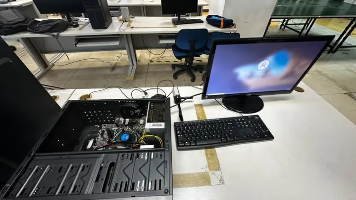
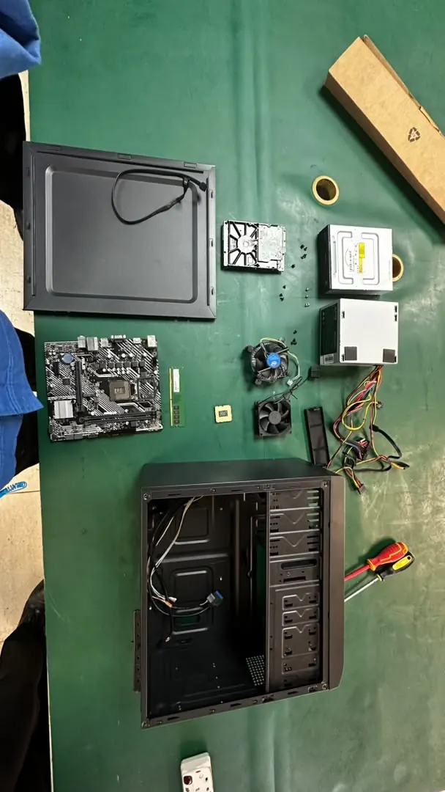

Bench 4: BIOS & Thermal Fix
Pembersihan habuk dan gantian thermal paste.
Projek & bengkel
Projek web, diagnostik dan logbook bengkel kelab.

Projek web
Projek pembangunan antara muka laman web kelab menggunakan HTML5 dan CSS3 moden untuk memaparkan log pembaikan perkakasan secara sistematik.
Video panduan
Tonton panduan ringkas bagaimana ahli kelab menyusun susun atur responsif dan melakukan analisis masalah sistem.
Video dimuatkan hanya selepas anda menekan butang main.
Projek perkakasan
Menggunakan perisian diagnostik sumber terbuka dan peralatan ujian untuk mengenal pasti punca kegagalan komponen komputer.
Sertai bengkel
Logbook
Catatan ringkas daripada meja kerja kelab.

Pembersihan habuk dan gantian thermal paste.

Analisis ralat memori dan kelajuan jam.
Sertai
Bengkel, sprint dan sesi pembaikan dijalankan di makmal JMTI. Tiada syarat pengalaman.
Daftar minat